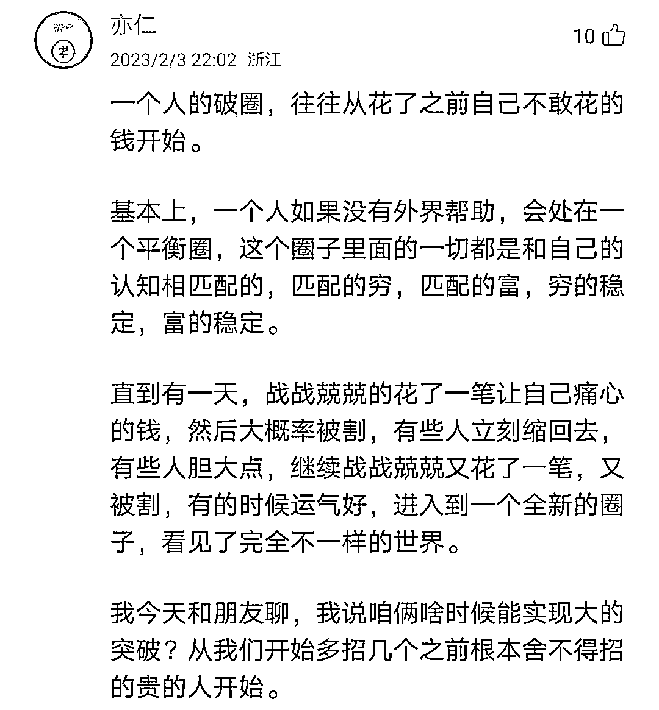
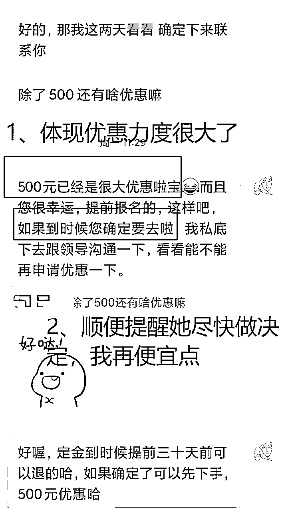

来源：https://cx05zf1grzt.feishu.cn/docx/SRJFdTkaAo7kP7xR6q1c1xM9nSb
大家好，我是阿钦，00年，2023年10月10号加入生财，目前已经4个月了，目前深耕小红书境外游项目，2个月利润8k+。
出单证明如下：
我是18年进的大学，本科，网络工程专业，汕头人。我刚开始上大学怀揣的梦想，一定要创业，于是机缘巧合地认识了一个做直销的师兄。
由于我缺乏基本的商业认知，每天下课后就跑去跟他们开会，天天跟打鸡血一样，根本不知道什么叫红利期，只知道带我的师兄天天在灌输“财富自由”的思想，让我心乱神迷，专业也荒废掉了。可怕的是，这四年来我一直没有意识到自己走错了方向，任凭亲朋好友劝我，我都没有理会，还坚信自己一定成功。
现实很快打了我一巴掌。毕业后，我没有从事本专业工作，当时做的第一份工作是文职类，业余时间还在做直销，想着再尝试一年多，最后还是没什么成绩。
其实不只是我，团队很多人都做不下离开了，只有我傻傻地坚持着，直到面对社会压力后才幡然醒悟。这是我非常痛的经历，坚持了四五年，虽然销售技巧练得不少，但没有在金钱上有所收益。如果早点进生财，结果可能也不一样。
于是23年6月我决定退出来，重新寻找方向。当时的我非常懊悔过去，没有认真学习好我的专业，哪怕专注于学业，现在的工资也不低，有很长时间我是消沉的状态。（当然我也感谢我们团队的人，教会了我很多销售技巧）
直到我听到《搞钱女孩》（少量男生的选择）这档播客，雪姨推荐了生财。我体验完三天后就毫不犹豫地加入了。当时我一点都不敢跟身边的朋友说，怕他们说我被割韭菜了。但事实证明，当初我加入生财的决定是正确的！
有了些正反馈之后，才有信心想对生财新人说一些忠告：
1、曾经，我误以为精华帖没啥用，要么觉得操作起来太难，要么根本看不懂。但后来我发现自己大错特错，原因是我根本没有看过足够多的精华帖。到底多少才算“足够多”呢？至少认真看二三十篇吧，这样你才会突然有所领悟！里面的一些销售技巧、朋友圈经营策略、小红书引流规则，可能现在用不上，但看过之后就会留下印象，潜移默化地影响你日后的操作。这些都是做项目不可或缺的基本功。
2、当你不知道做什么项目的时候，不妨去听听生财的直播。虽然不一定能立刻解决你的疑惑，但听得多了，总会受到启发。
3、生财的航海项目，我强烈建议大家认真参与。反正是押金制度，完不成还可以退款，怕啥？不要担心自己做不起来。我举个例子，我报名了小红书境外游和RPA项目，但RPA那块我实在不擅长，所以就做不起来了。不过，亦仁哥说：“试试看，反正成本不高。”我觉得这话特别在理。
4、要主动跟厉害的人建立联系，哪怕只是看看他们的朋友圈也好。这样你就能接触到更多优质信息，时刻激励自己：“哇，这些大佬都这么优秀了，还在努力干活，他们的感悟心得真的很有启发性。”这样你就能不断受到鼓舞，努力提升自己。
一开始我非常兴奋，每天刷着风向标和精华帖，晚上下班还看直播。但是看久了会觉得很焦虑，怎么大家赚钱都这么容易，我也太差劲了吧。于是，抱着“光看不练假把式”的心态，看了几十个精华贴之后，我决定动手干两件事情，AI简历代写和夜校。
说起来也不怕大家笑话，这两个项目我还没完全跑起来，中途就卡壳了。
先是AI简历代写，我把模板和定价都弄得差不多了，但就是没勇气放到咸鱼上去。心里总是犯嘀咕：“万一真的有人来找我写，我不会编怎么办？”还有“利润这么低，我还是别干了吧”，就是因为这两个心理，导致迟迟没有动手。后面复盘才意识到，“有人找你不是好事吗？不懂怎么交付不会请教别人呀”、“做都做了，先赚到一块钱再说，至少是个正反馈呀”
再说说夜校这个项目。当时看到生财圈里的朋友们都在讨论，而且小红书上的流量也相当不错。我也兴致勃勃地写了个帖子，还收到了几个询问。本来嘛，按常理出牌，建个群，把人引流到微信群，然后再去找老板谈合作。但我中途又打了退堂鼓，心想：“算了，感觉自己搞不定。”于是，帖子删了，项目也搁置了。现在回想起来，我简直是在浪费资源，而且在做项目的过程中，任何一个小小的卡点，都能阻止项目进行下去。（新手常见情况）
后面痛定思痛，我需要有人带我！就像杨涛（涛哥）讲的，没有慧根，但要会跟！
12月，生财开启了大航海，我报名了小红书境外游，刚好12月20号，生财邀请炮爷直播讲解境外游的玩法以及前景，然后我思考了很久，觉得24年境外游项目一定很有市场，于是去调研了一番，看了炮爷和超人过往在生财写过的精华帖，并去翻了一下他们俩之前全部的朋友圈，发现早在几个月之前，他们这个项目就已经拿到了亦仁的微天使投资。
最重要的是，他们分享的文章传达出来的价值观深深地吸引了我，而且是有充足实战经验的老师，于是我决定跟着老师做。亦仁哥说过一句话，一个人的破圈，往往从花了之前不敢花的钱开始。正是因为我破了圈，才让我获得更多的赚钱机会。

经过2个月的实践，现在取得了一些小成绩，最高的一篇笔记阅读量4w+，成交了4单，利润有8k+，还有一些客户在跟进中。
分享复盘一下近2个月的实操情况，展示一下部分的成绩：
12月21号，我正式开始实操，我真的非常小白，甚至都很少用小红书。因为基础实在太差，所以我把超人的SOP认真看了不下5遍，大家可以直接跟着他那篇帖子做就好。
飞书链接：
超人总结过：『模仿、总结、实践、总结』，四者缺一不可。
为什么说模仿是排在第一位呢？
从生物进化的角度来说，生物可以通过模仿，快速学习其他生物的优点。为什么需要这样学习，效率最高，因为其他生物的优点是通过无数次的试错，最后才活下来的（大环境不断改变，适者生存）
在自然界往往试错一次，一般都是缺胳膊断腿的，甚至命都没了。
所以其他生物不敢轻易试错，最稳妥的办法就是快速模仿能存活下来的行为，来提高自己的生存率。
我想像生财很多大佬一样优秀，第一步应该做什么呢？
首先确定模仿对象：
整理好手中最优秀的名单（最好是取得过成绩的，有时间验证的，有口碑的，并且有大量的输出）
然后把他们的过往记录，至少看上一遍。比如公众号、朋友圈、论坛、精华帖。
认真看完之后，这些大佬们对一些问题的思考和看法，能学到一点，甚至一些。
乔布斯每天都会自省。
当他被苹果公司赶出去后，思考了自己在公司的得失，分析了自己的错误和不足之处，最终重返苹果公司，并带领公司走向了新的辉煌。
其实所谓的自省，总结也就是思考。我们只要养成多总结多思考的习惯就好。
总结什么？想想成长有哪两个方面，认知，做事办法，往这两方面靠。
认知上：
比如我大学缺乏商业认知，自从接触了生财后，我才知道『红利期』的概念。
简单来讲，就是狼少肉多。就拿境外游来说，传统的旅行社不知道小红书的获客打法，竞争对手少，而出国旅游的需求在不断上升，这时候入场就容易分到一点肉吃。
做事上：
曹大说，牛人都会对自己狠一点，这个狠一点，就是执行力强。
当时不知道哪里来的动力，20号听完直播，21号开始看sop和养号，24号发布笔记，那几天从早到晚都在研究。
执行力强是做项目的基本功，也是底层逻辑，之后迁移到其他项目，做成的几率会上升。
有句俗话，实践出真知，因为脑袋里想的，往往跟实际不一样。
而实践最好的办法，就是『像素级模仿』
拿境外游举例
1、把小红书上面爆款的笔记认认真真的看一遍
2、找出3-5个对标账号。
3、根据爆款笔记，整理出一些共性，比如标题、封面、内容、钩子。
模仿到位了，能争取较快地出成绩，因为同行已经帮你验证过哪些笔记会爆了。
总结啥呢？
1、我在这个项目遇到了那些坑？收获到了什么？
2、跑通这个项目的底层逻辑是什么？能不能迁移到另外的项目？
3、这件事能不能深耕？能不能积累？
4、思考怎么提高转化率？让擅长引流的人负责引流，擅长销售的人负责销售，整体的转化率会不会提升？
总之，没有模仿学习，效率很低，往往会走弯路
没有实践，就只会空想家，眼高手低
没有总结就没办法形成自己的知识体系，永远都是别人的经验。
如果连自己的业务都搞不清楚，那怎么回答客户问题？
我完全不懂旅游知识，所以我在还没有客户之前，就把客户可能会问的问题熟记在大脑中，方便熟练地解答客户的疑问，不至于手忙脚乱。
基本的业务知识是销售的基本功。
1、开放性问题
了解客户基本情况后，客户可能会有一些想法没有表达出来，这时候可以问：
您还有什么补充吗？
您有什么景点想去的呢？
您会比较看重旅行哪个方面呢？
鼓励客户把内心想法表达出来，他可能会说，我还想去XXX，这样找团会更精准。
2、试探性提问
那……可以接受吗？
如果出发点是深圳，且有联运，会接受么？
有些客户拿捏不准的，不知道要玩多少天，不知道去哪里玩好，不知道签证要多久办理，其实都可以问出来。
举个例子：
因为我前面了解到客户是可以游玩12天以上的，所以我才推荐这个稍微超预算的团。
客户希望的，当然是最理想的状态，但是我们可以适当建议，或者试探一下，是否能够接受其他选择。
3、引导性提问
有些客户上来就要你把多个国家的团给她看，但这会增加自己的工作量。
你可以问她，
您这边会优先考虑哪个国家呢？
这样可以引导她优先关注感兴趣的团（因为团很多），她也不会因为团太多，过分纠结。
靠谱姐销冠手册有句经典语录，销售的本质，就是问题的解决和情感的愉悦，只要能实现其一，就可以达成成交，如果都达成了，就是裂变和持续成交。
在我看来，专业解决客户的理性脑，温度解决感性脑，两者结合，基本无敌。推荐大家看靠谱姐的销冠手册，我反复看了5遍不止。
1、适当用一些小昵称，比如：宝子，亲爱的，咱们，拉近距离；还可以适当发一些可爱的表情包，女生嘛，比较喜欢~
2、共情，站在对方的角度思考问题，多替客户解答疑问，虽然暂时不能成交，但会给她留个好的印象，甚至给你自发给你推荐。
我有个客户，本来是想来咨询欧洲游，结果给我介绍了整个部门的团建，34人，营业额9w多。
尽量地耐心回答客户的问题，获取对方的信任，多替客户着想，你会收获「信任度」，让对方感觉你好！
甚至，她还会直接转介绍其他部门的团建！！
那可是十几万的单子呀！
1、及时，能做到及时解答客户问题，很能体现专业度。
2、拿捏不准，可以说
稍等，这个问题我要去询问一下专门负责的同事。她会比较忙点，有消息了马上通知您。
如果你聊下来，解决了客户一些问题，发现她意向比较大，你就可以进行逼单了。常见的3种逼单办法：价格、位置、签证
限时价格是非常有效的逼单方式，当客户对某个团的意向非常大的时候，你可以建议她优先交付定金，优先锁定优惠价格，这样她也不容易变卦。
宝，今天是9号啦，也想来提醒你要不要先预定四个位置，毕竟可以省下500元！或者有什么顾虑也可以跟我说哒
如果她担心交了定金之后不能去怎么办？这时候需要给她信心。
咱们行程有写清楚哈，如果在团出发前提前30天决定不去的话，是可以全款退给您的哈。不用担心，这边转账是有记录的。
当某个团位置不足或者临近截止的时候，可以跟客户强调这个团快没有位置了
亲爱的，目前这个团只有两个名额而已啦！目前也还有其他客户也在咨询这个团，如果你确实想要去的话，您可以先交定金，我马上给您抢位置。
宝~您是看是缺人不想去吗？要不去的话，那这个团的位置我也没法给您留了，那等你以后有这个想法和计划的时候，您在找我吧！（来自超人的话术，欲情故纵）
不用担心到时候团其实没有满。我有个客户就是用位置不足逼单的，然后她也爽快下单了。之后去录指纹的时候，她发现只有13人（实际满人20人），我跟她说
那更好呀，人少在行进的过程中就更容易协调呀！可能有些客户因为家里突然临时有事取消也很正常的。
有些人心仪的景点快到签证时间了，这时候可以催促她，赶紧办理相关材料。
亲爱的，4.1号团马上就要提交材料了，我担心你赶不上，你看看赶紧下订金我帮你落实。
她第一次去国外，好不容易有这个机会，加上不懂签证，所以她会非常配合你的签证工作的，甚至比你还着急。
最顶级的销售，是客户主动来找你。
朋友圈的打造非常的重要，客户加你之后，会观看你的朋友圈。优质的朋友可以减低她对你的戒备，毕竟要交易这么大一笔订单，肯定需要有信任感才愿意在你这里下单。
我一般置顶退款截图，游客返图，与客户的对话
日常会发一些团的海报，自己的感悟，日常生活，有个客户就是看到了我发的团，主动来问我有没有位置的。
关于朋友圈人设打造，生财的精华帖可以搜索到，非常实用！
怎么锻炼执行力，就是靠执行力尽快的找到一个正反馈。这样的话，正反馈就像一个助推器一样，拼命加速推着你不断前进。（来自超人）
正是因为第一个正反馈，才让我有信心持续做下去，但这个过程也遇到一些波折。我把这三名客户分别列为A、B、C。
客户A、B都是要去新西兰的，沟通了挺久，也交了订金，最后退款了。一个是家里临时有事，一个老公是国企人员不能出境，非常可惜，但这也是交易中避免不了的事情，总会有人退款，放平常心。
客户C让我印象深刻。我跟她聊了两天多，而且一聊就是持续五六个小时。因为她第一次出国，很多东西都不懂，一些详细到航班出发时间等等问题，我都事无巨细地给她解答（打字打到我手酸）
她在不断增加我的沉没成本，因为她聊天的过程时不时就会砍价，至少砍了一千多元。而且不停地索要优惠。我们已经额外给她赠送了一台WiFi，但是她要求再赠送另外一台（因为她们四人出行）。有一次我实在受不了，我跟她说，“我快崩溃了”。
聊到最后，她是愿意在我这里付费了，但是她的同伴因为我们没有在携程上架产品，交易不信任，取消掉了。
发生这件事情，让我凌晨三点睡不着起来复盘，满脑子都在想这件事情。
后面总结原因的时候，可能是因为客户本身就多疑、苛刻，这笔生意不做也罢，省得受气。
另一方面是因为自己在解答【不信任交易流程】这里的话术不够有说服力。
优化的话术如下：
客户：你们产品有没有在携程上架？我直接去上面付款就行。
我：有些产品是有在携程上架，因为我们是携程的供应商。但是这个团，您在携程上搜不到。因为这样做，平台抽不到利润，这就是为什么能够给您优惠1千多，正常来说是不能优惠的。而且您不用担心交易的问题，一方面我们有营业执照，另一方面我们是对公转账，支付宝或银行卡是有交易记录了。我们做了十几年，不会骗您的，如果您不相信，可以到国家文旅部官网查询我们是否正规。
我想对没有做过销售的朋友说，“遇到沟通失误的情况，有心理波动很正常，慢慢调整好心态后，还得继续干，就当练手了。”
积极撞击世界，成败皆为反馈。
1、客户问，能不能优惠呢？
可以呀，咱们这边是一手供应商，价格绝对有优势，而且您在境外遇到任何问题，都是可以跟我们联系，我们会协助您处理。
回答问题的同时，凸显优势。
2、客户问，能不能再便宜点呢？
所有客户都是想要优惠的，回答她，可以！因为我们的利润空间很大（基本上6-10%的佣金）

但这里涉及到一个谈判原则，
对手提出一个要求时，自己也要给对方提一个要求，不能轻易让步。
要体现出我们这个优惠力度很大了，正常来说是不能再优惠的，如果您9号前能够确定跟团，我再给您优惠！（我优惠，你尽快确定）
很多客户在意跟团人数（期待15人），但是并不知道一个精品团大概的人数（25人左右）
这时候可以解释：
15人以下的团很多满足不了的，特别是旅游旺季，一般25人已经是精品团啦。25人只是最大能够接收的客户，实际上还要看最终收客情况。我有个客户，一开始也很担心人数（满人20），但是最后收客只有13人。况且这种接近2w多的团，团友的素质都是比较高的，都是注重高体验的人群，大家在旅行的过程中也很容易协调的，不用太担心哈。
很多单人出行的客户，其实不太愿意补单人房差【解释一下，出行的标准是双人间，而单人间的价格>双人间，如果落单，就只能安排单人房子，所以要求客户提前交单人房差，按拼成功的天数归还】
这时候可以提前（在第一步了解基本情况的时候）打个预防针：
这样可以判断她对这个房差能不能接受，提前解除她的顾虑，方便她做决定。
24年境外游在回暖，目前也有几十个客户在跟进中，争取三月份拿下4个单子，半年做到利润2w+，24年做到5w+。
真的很感谢生财这个平台，让我开了眼，结交了优秀的人老师，也在这个过程中，赚到了非工作以外的收入。2024年继续脚踏实地干实事，练好基本功。
祝每一位新进生财的小伙伴，能够找到适合自己的项目，不断成长自己！欢迎与我交流